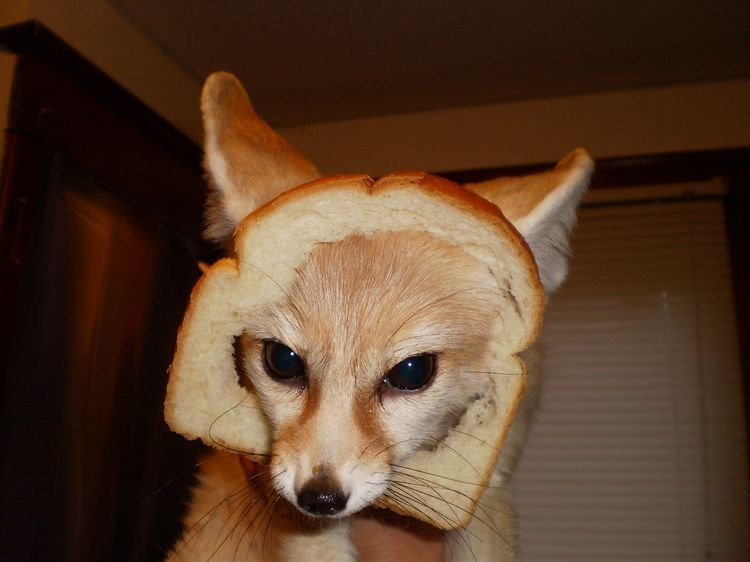

Meu primeiro post
Por: Isadora Ribeiro
Boas-vindas ao meu novo blog! Aqui vou compartilhar meu amor por bichinhos e desenhos.
Vou compartilhar conhecimentos sobre tecnologia e programação

Por: Isadora Ribeiro
Boas-vindas ao meu novo blog! Aqui vou compartilhar meu amor por bichinhos e desenhos.